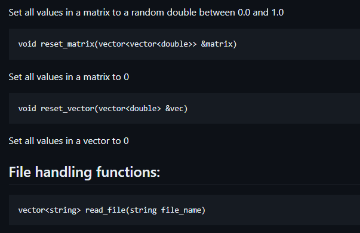

Projetos
Biblioteca para criação de IA
Ao longo dos anos eu venho desenvolvendo uma biblioteca para simplificar a criação de inteligências artificiais usando C++, possibilitando que um desenvolvedor simplesmente descreva quantas camadas e neurônios a rede neural deve ter, além de fornecer os dados para treinamento
